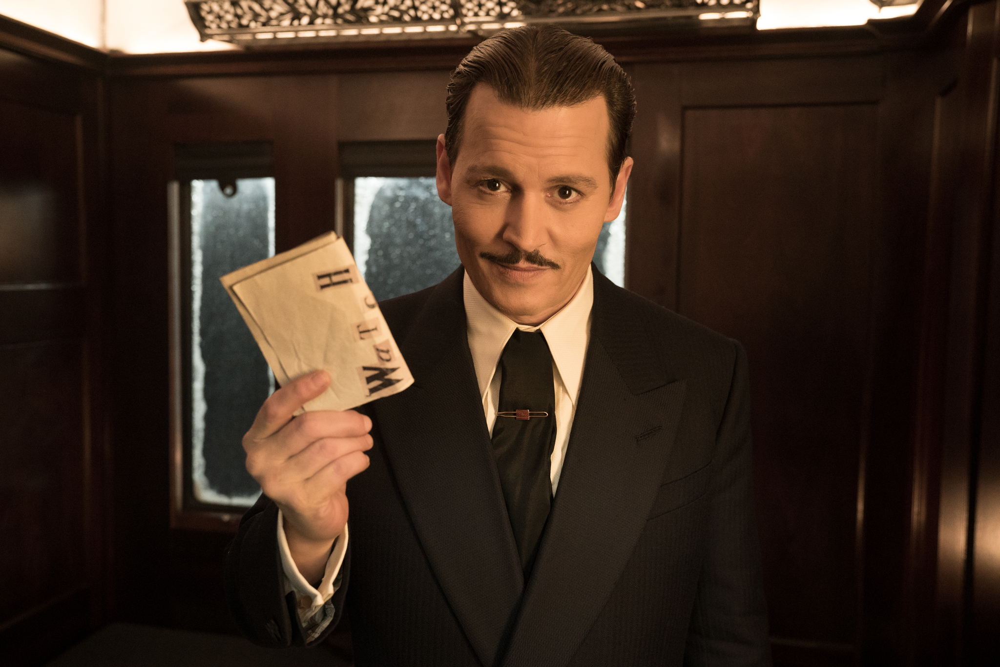
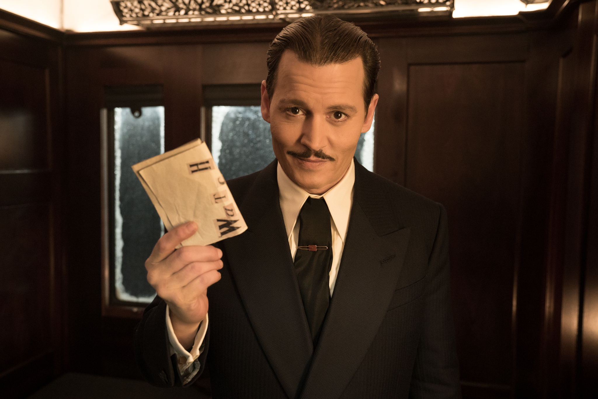

In Murder on the Orient Express, the detective Hercule Poirot, a recurring character in the work of Agatha Christie, finds that he must travel from Istanbul to Europe and so books a ticket on the famous Orient Express. Before leaving Istanbul, he encounters a wealthy older man by the name of Ratchett, who asks for the detective's help fending off certain enemies. Poirot refuses, feeling suspicious of Ratchett's character. In Istanbul, he also reunites with his old friend M. Bouc, who works for the company that manages the Orient Express. He learns that Bouc will be traveling on the train with him.
The Istanbul-Calais coach upon which Poirot travels is filled with an eclectic mix of passengers: an elderly Russian princess, a British colonel, Ratchett and his two employees, and an annoying American woman, among others. Early in the journey, Poirot hears the English colonel and a young English governess speaking in a way that reveals they know each other well, though they claim to be strangers. On the second night of the journey, Poirot endures a sleepless night with various noisy disruptions. The next day, two pieces of news emerge. First, the train is indefinitely halted by a snowdrift. Second, Ratchett has been stabbed to death in his berth. Bouc asks Poirot to solve the murder mystery. The lack of footprints in the snow indicates that the murderer is still aboard. The coroner, Dr. Constantine, determines from Ratchett's wounds that he has been stabbed 12 times, probably by at least two different individuals.
Poirot begins to investigate by interviewing passengers and searching their luggage, keeping M. Bouc and Dr. Constantine close as he investigates. He has several clues to go on, including a pipe-cleaner and monogrammed handkerchief found at the scene of the crime, and multiple witness testimonies (including Poirot's own) about a woman wearing a red kimono. One passenger reveals himself to be a detective hired by Ratchett, and says that Ratchett was afraid that a small man with a high voice would attack him. However, Poirot's greatest clue is a scrap of a letter recovered from the crime scene. Though the letter has been nearly destroyed, Poirot is able to determine that it references a child named Daisy Armstrong. He is therefore able to link Ratchett to a famous case, in which a child named Daisy Armstrong was abducted and held hostage by a gang. After she was found dead, her wealthy parents both died, one from shock and one from suicide. A nursemaid, briefly suspected of playing a role in the abduction, also died by suicide. Poirot determines that Ratchett was actually named Cassetti, and that he was the head of the gang responsible for this tragedy. Despite his clear guilt, Cassetti never faced justice, mostly because of his wealth. Thus, at the time of his death, he was traveling the world under a false name to escape his own infamy.
Poirot slowly begins to connect each passenger to the Armstrong case, realizing, for instance, that one passenger was Daisy Armstrong's aunt, while another was a family governess. As these revelations build, Poirot calls the passengers in to hear his theory of the case. He says that he has two possible explanations. The first of these explanations attributes the murder to a stranger who briefly boarded the train, killed Ratchett, and left. This explanation makes it impossible to find or try the alleged killer, and is also clearly untrue—it fails to account for numerous facts of the case. Poirot then shares his second theory, which is that every train passenger was part of Daisy Armstrong's household and came together on purpose to collectively kill Ratchett, each stabbing him one time. This explanation is clearly true. However, realizing that Ratchett's killers were justified in their actions and that they should not be punished, M. Bouc and Dr. Constantine agree to settle on the false, first theory, thereby absolving the passengers of guilt.
 

© For more information, please visit the website: movie.com